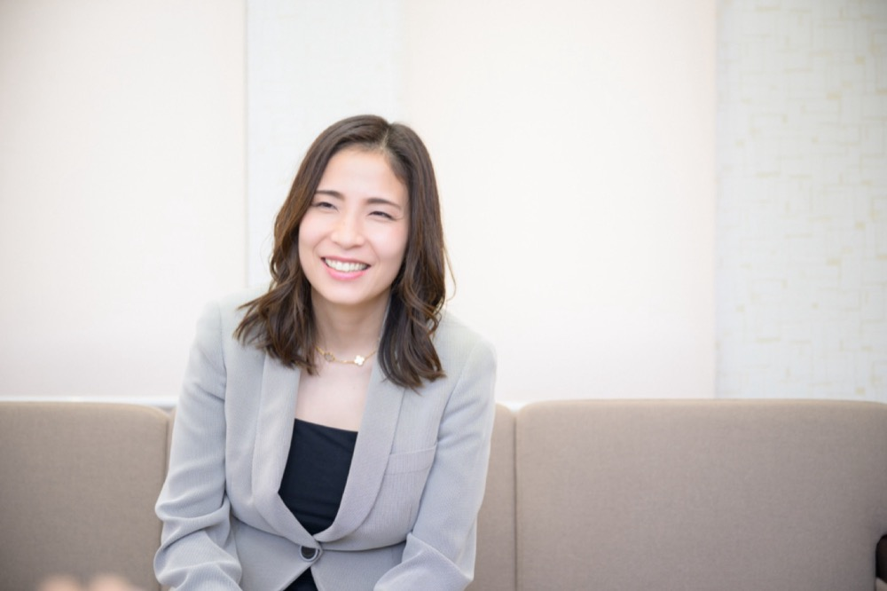
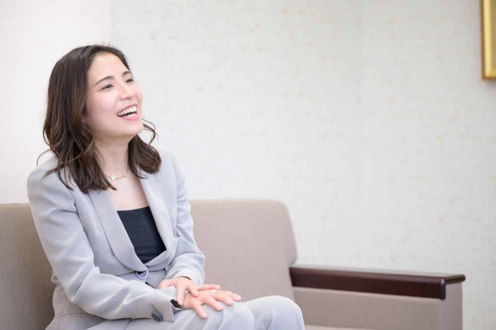
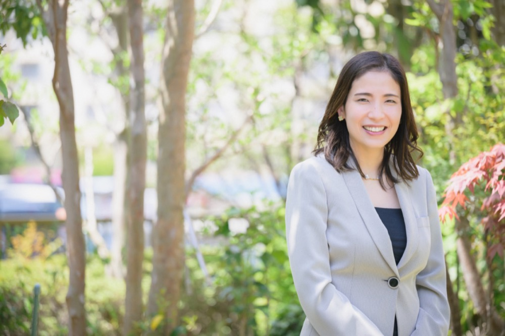

ぬくもりを大切にする調剤薬局
尾崎 汐里
株式会社友愛メディカル 代表取締役
千葉県松戸市生まれ。東邦大学薬学部卒業後、2012年に株式会社友愛メディカル入社。入社後は薬剤師を経て、店舗責任者、新店舗の立ち上げ、新人研修担当などに携わる。2021年4月、同社代表取締役に就任。患者とスタッフ双方に寄り添う経営で34店舗・285名を率いる。母の創業精神を受け継ぎ、薬局経営を通して、地域医療の安全確保と質向上を目指す。
企業サイトを見るTRACK 01
ぬくもりを大切にする調剤薬局
株式会社友愛メディカル。創業地である千葉をはじめ東京・埼玉・茨城、そして長野へ30店舗以上を構え、述べ280名以上のスペシャリストが「安心」という名の見えない通貨を受け渡す、今熱い調剤薬局ブランドだ。医療という厳粛な営みのなかで、人間性を失わずに患者と同じ目線で向き合うという理念が込められている。
その舵を握るのは、代表取締役の尾崎汐里。患者と視線を交わしながら薬を手渡すその姿は、先代の社長であった母の背中を見上げていた少女の延長線上にある。
TRACK 02
友愛メディカルは「近道だった」

1988年4月、友愛メディカル1号店「友愛薬局」が開局。そのわずか4カ月後に尾崎は産まれた。いつも家族を大切にしながらも、全力で仕事に向き合う母の後ろ姿と多くのスタッフに囲まれその一人一人を大切にする姿…それが幼少期からの光景だった。
東邦大学薬学部で6年間を研ぎ澄ました彼女は2012年、新卒薬剤師として友愛メディカルに入社。著名なナショナルチェーン薬局からのオファーもあったが、最終的にすべて辞退したという。「他社を経験してからのほうがいいんじゃないかという意見をいただくこともありましたが、私は昔から母のように、自分の理想的な薬局をもちたい薬剤師になりたいと思っていました。そしてそれを叶えるためには、実は一番身近にある友愛メディカルに入社するのが近道だと確信したんです」
もちろん社長の娘だからといって、医療に携わる一員として、他の社員同様少しの油断も許されないのは当たり前。入社後は臨床薬剤師として、調剤、服薬指導などの業務に邁進する日々を過ごした。


TRACK 03
効率性と人間の温かみの両立
友愛メディカルの薬局には、必ず座って話すための投薬台がある。立ったまま早々と薬を渡すチェーンの合理性をあえて取り入れず、患者一人ひとりの距離感を毎回測り、患者自身がしっかりと理解できるように懇切丁寧に説明するスタイルを構築した。「もちろん急いでいる人は引き止めません。ただ、安心の速度は人それぞれですし、患者さんが納得できるように対話することは、AIにはできませんから」と尾崎は笑う。
そして業務の効率化を進める一方、尾崎は“人にしかできないこと”にも時間を使えるように苦心してきた。近年は調剤ロボやAI監査を積極的に導入し、空いたその時間を“人間同士の対話”に再投資。DXは人を薄めるためでなく人間関係をより濃くするための装置であること、それが彼女の哲学だ。
地域貢献も飾りではない。在宅医療には20年以上前から挑んでおり、自宅や施設で療養生活を送る患者のもとに訪問して、その薬物療法を支えている。また、訪問医師や看護師、介護などとの関連職との連携を深め、療養生活の安全向上に寄与している。千葉県総合救急災害医療センターの門前薬局公募に中小ながら選ばれたのは、「災害時にはグループ全店で薬と人員を投下する」というプレゼンの説得力だった。薬局のカウンターから災害拠点まで、彼女の視界には“一人でも多くの命を支える導線”がいつも描かれている。